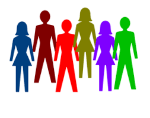

Menu
What Participants Do
- Network: Communicating with others to explain, gather, and disseminate information and ideas to gain knowledge, sources and materials to complete our goals.
- Peer Support: Communicate within our own members about our personal challenges, achievements, and goals.
- Building Project Planning Skills: Building on organizational tasks that will be needed to start and complete your project. Also to build and learn new skill sets etc. (ex:Research jobs markets)
- Work on Current projects: spending time researching our own personal projects or goals.
- Take assessment to learn new skills:
- Brainstorm new ideas for marking products and services at Dreams of Millions, Inc:
- Meet with Care Source about job initiatives (life coach): For those who are eligible.
